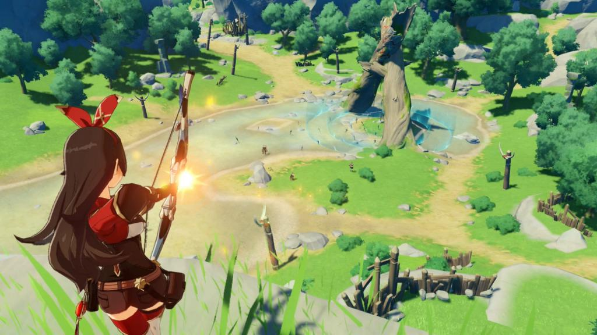
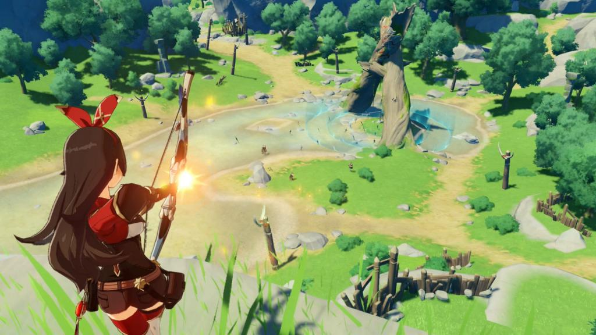

Genshin Impact est un jeu d'action-RPG addictif qui vous fera voyager dans un comtinent imaginaire apellé Teyvat. Les graphismes ainsi que les musiques de ce jeu sont magnifique mais ce n'est pas tout ce dont il peut ce vanter. L'histoire du jeu est complexe et haletante et chaque personnage a une histoire personnelle détaillée. Petit plus qui vous fera peut-être encore plus aimer ce jeu: il est jouable sur mobile, bien sûr, mais aussi PC, PS4, PS5 et bientôt sur Nintendo Switch.
Si vous voulez en savoir plus sur Genshin Impact, un article spécialement dédié à ce jeu est disponible dès maintenant ici


 
